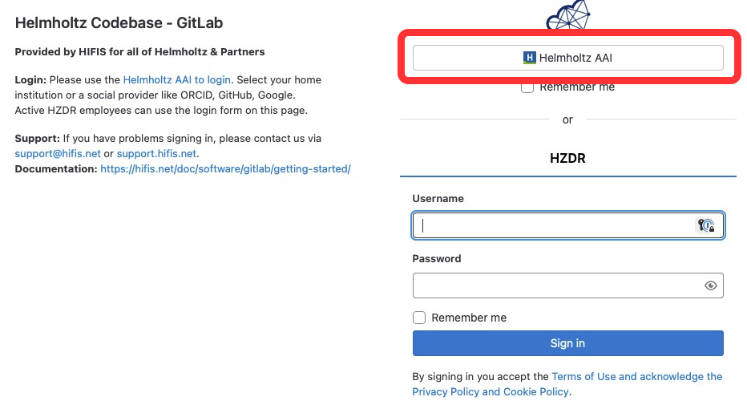

You can use an existing Github, Google, ORCID or possibly an institutional account to authenticate. Follow the steps below. It should take less than 5 mins.
Use this link. You’ll be presented with the following page. When prompted press the button “Gitlab” under “Create your account with one of the following:”
image_1_get_started
Ignore the request for HZDR credentials. Look at the bottom of the page, press the button marked Helmholtz AAI
image2_choose_auth
In the search box look for Github, Google, ORCID or your institute.
Select_github
You will see this screen and be asked to register
press register
You will then be asked for some more details. Remember to press “I agree” before “submit”.
enter details
You will get a message saying “Registration Submitted”
reg submitted
After you submit this you’ll be sent an email to the email address you entered in step 5. Open this email and press the confirmation link.
You can now attempt to log in again using the same Github, Google, ORCID etc that you used before. When asked you should press “remember my descision” and then “Allow”.
allow
You should now be at a “Town Square” page
town square
Look at the top left, there is a “+”. Press this to see the other channels available that you can join.
channels
Connecting a Desktop Client or Mobile Client
If you like you can install a desktop or mobile client. from this link
You will need the HZDR mattermost URL: https://mattermost.hzdr.de/. Make sure you also enter a "display name"